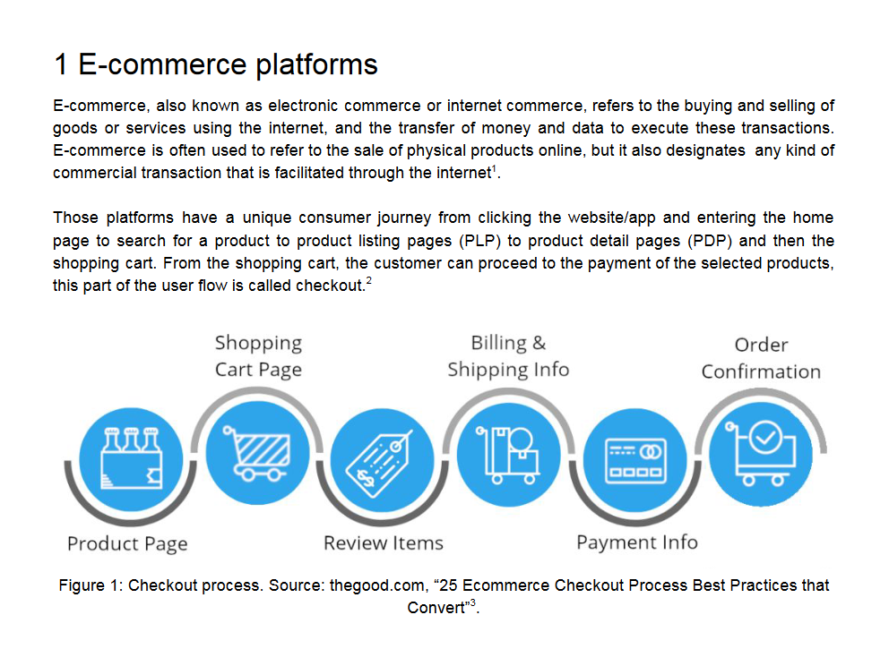
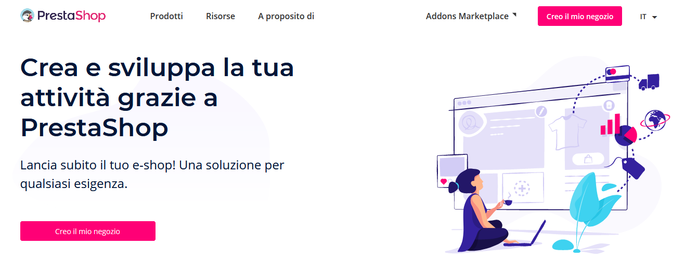
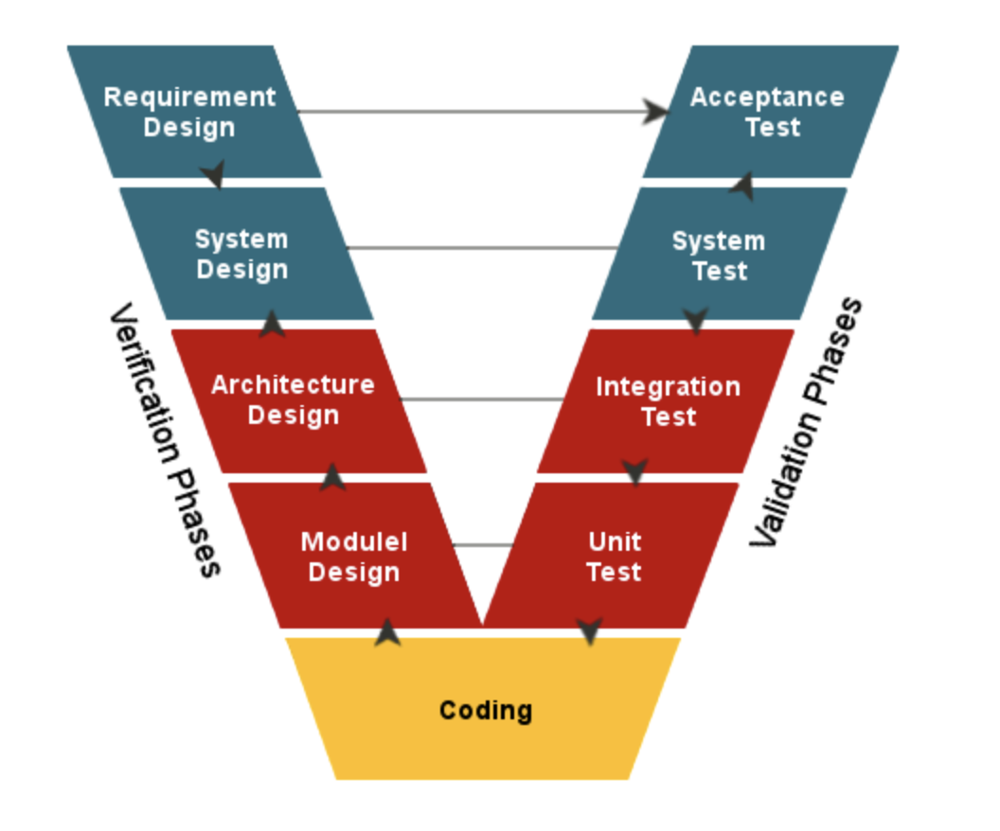
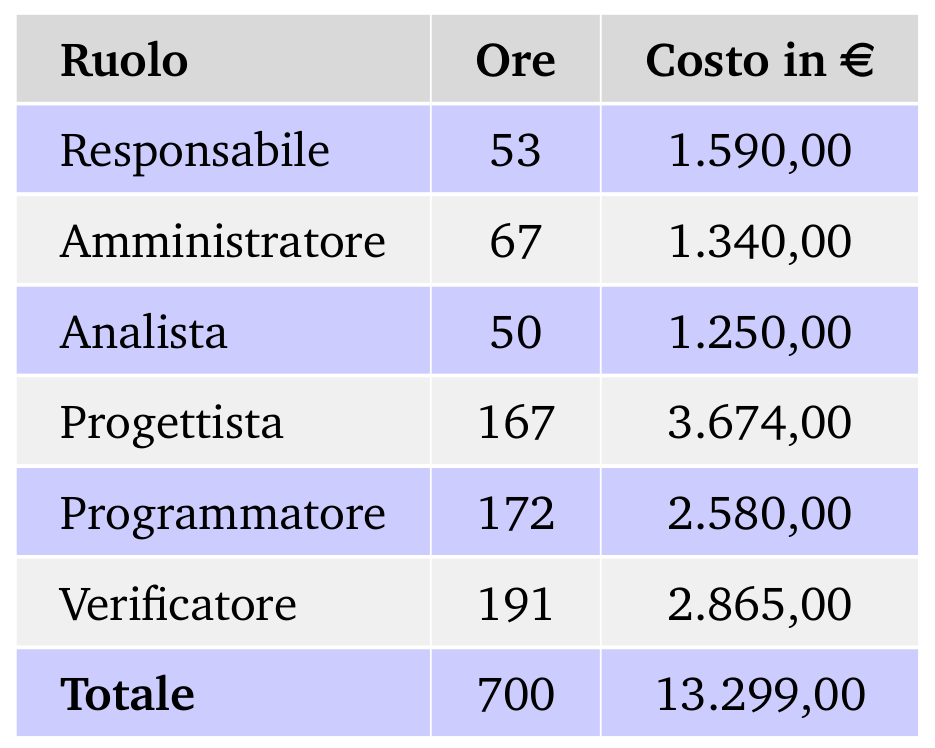

# SWException ### Corso di Ingegneria del Software Università degli Studi di Padova A.A. 2020/2021 Laurea triennale in informatica <em>Revisione dei requisiti - 18 Gennaio 2021</em> --- <!-- MARCO: elevator pitch --> # L' e-commerce oggi <img src="imgs/grafico_ecommerce.jpg"/> ## "Fatto da mio cugino" nasconde dei rischi <img src="imgs/rischio.jpg" width="400" height="250"/> ## <img src="imgs/emporio.png"> - Esecuzione del codice "on demand" - Risorse scalabili "Pay per Use" --- <!-- NICOLE: studio di fattibilità, motivazioni della scelta --> # Perché <img src="imgs/emporio.png"> ## Punti di forza <img src="imgs/puntiforza.png"/> ## Punti di debolezza <img src="imgs/puntidebolezza.png"/> --- <!-- GIANMARCO: requisiti individuati --> # Fonti dei Requisiti Per l'analisi dei requisiti e l'individuazione dei componenti necessari allo sviluppo del progetto sono state consultate diverse fonti ## Analisi del capitolato  ## Analisi E-commerce già esistenti <p>Presta Shop</p>  <p>Amazon</p> <img src="imgs/amazon.png"/> ## Comunicazione e confronto proponente Per raffinare e migliorare il dettaglio nei requisiti identificati Note: utilizzo di Slack e Google Meets --- <!-- MICHELE: piano di qualifica --> # Obiettivi di qualità Per misurare il livello di qualità del software prodotto sono state adottate le seguenti <strong>metriche</strong> ## Di processo - Variazione dei costi - Variazione delle scadenze stabilite (schedule) - Percentuale dei requisiti obbligatori soddisfatti - Percentuale dei requisiti opzionali non soddisfatti - Requisiti desiderabili non soddisfatti ## Di prodotto - Indice di Gulpease - Correttezza ortografica - Complessità ciclomatica - Complessità delle espressioni booleane - Lunghezza delle righe di codice - Code coverage Note: il PdQ avrà anche il compito di riportare le misurazioni effettuate secondo queste metriche. Al fine di garantire la qualità del software che il nostro gruppo andrà a produrre il processo di verifica sarà continuativo e presente in ogni attività progettuale. Note: quindi seguiremo il modello di sviluppo a V.  Note: in particolare i vari step progettuali si accompagnano da una contestuale progettazione dei test Quindi al termine dell'analisi dei requisti sono stati definiti i test di sistema, i quali mirano a garantire la <em>copertura totale</em> delle funzionalità definite. Questi test saranno implementati con Selenium, un software open source per effettuare test di sistema automatici su siti web. --- <!-- STEFANO: organizzazione lavoro futuro --> --- <!-- IVAN: consuntivo e pianificazione --> # Analisi dei Requisiti ### Preventivo analisi dei requisiti <img src="imgs/preventivo_requisiti_generale.png" alt="preventivo_requisiti_generale" width="750px"/> Note: - Lavoro svolto in **questo PERIODO è importante** per la buona uscita del progetto; - dovevamo prendere **confidenza con un'esperienza** di questo tipo; quindi preventivato: - 30 ore a testa; - abbastanza **ore di verifica** per cercare di **limitare gli errori**. ### Consuntivo di periodo <img src="imgs/consultivo_requisiti.png" alt="consultivo_requisiti" width="600px"/> Note: **Sforato** di poco: principalmente dovuto all'**Analisi dei Requisiti** (*avuto qualche **incomprensione poi chiarita** con il proponente*). ## **Non** vengono rendicontate Note: Sono ore di investimento i **PERIODI**: - Analisi dei Requisiti (*dal 20-11 al 11-01*) - Consolidamento dei requisiti (*dal 12 al 18 gennaio (oggi)*). --- # Pianificazione Note: Abbiamo pianificato di consegnare per la **RA** del **10 maggio** 2021, quindi... ### Scadenze <img src="imgs/scadenze.png" alt="scadenze" width="90%"/> Note: **Prime scadenze disponibili** perché: - alcuni membri desiderano **laurearsi a luglio** quindi necessitano - iniziare lo **stage in tempo** per poter partecipare alla **sessione di Laurea** di luglio ### Incrementi pianificati - Incremento I - Incremento II - Incremento III - Incremento IV - Incremento V Note: 1. **Progettazione e codifica struttura del PoC** *2021-02-06 / 2021-02-21* 2. **Codifica del PoC** *2021-02-22 / 2021-03-01* 3. **Progettazione e codifica funzionalità principali lato cliente** *2021-03-02 / 2021-03-20* 4. **Progettazione e codifica funzionalità principali lato venditore** *2021-03-21 / 2021-04-02* 5. **Progettazione e fine codifica delle parti mancanti** *2021-02-06 / 2021-02-21* --- <!-- francesco: costi previsti --> # Costi previsti ### Preventivo del progetto  ### Impegno orario rendicontato <img src="imgs/preventivo_rendicontato/totOreRendicontate.png" width="100%" />